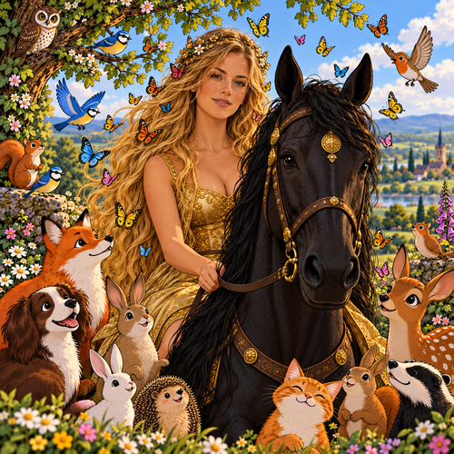

Like the relationships is over
and as much as I would cast a loving look at you
and try and snuck another stolen kiss,
our phases of love are a changing
and it is now really time to move on past,
before the real cost is assessed by true, caring friends,
damaged mortgaged payments:
Oh! And of course the brutal, bitter family separation,
with crying kids and broken altar promises,
will we be damned reckless for our insolence and betrayal,
What could be funnier that a swarm of Donald Ducks,
paddling on skis,
falling into fresh snow on a mountain of scarlet hair brushes
and bouncing around on top of your crown singing:
“That’ll Be The Day”, by Doris Day
and Rhett Butler doing summersaults, shouting gleefully:
“Frankly my Dear Dry I don’t give a dam!”
Which of course was a David Essex, sung and told story,
a sequel or is that a prequel to:
“Stardust”, a rock and roll movie,
about fame, drugs and a wasted life,
enough venom for you never to be my wife?
And gone with the wind on speed are you now.
Like Tom and Jerry is our cartoon comic strip romance,
a built up notion of a loving devotion,
which has character cats chasing mousy tails,
and wicked witches playing with my bright red britches
and me taking blessed virgin kisses,
While the seven dwarves are watching,
phased, amazed with our loopy plans
and of course one poison red, juicy succulent apple,
to tease and tempt you into a lapless, hapless, fallen dreamy sleep,
with no prince charming there to save you at the gates of grace,
keeping you from a realty of commitments,
which will strike you hard in your caring, beating heart,
and as these bonds are broken
and with your spiritual words will you be left unspoken for,
No more can you be my Snow White,
or long haired Rapunzel,
or my Lady Godiva:
naked and riding a strong white stallion into the star studded, creamy, Milky Way,
and aye,
just by the way sending me on my way to Coventry!
Or perhaps you were my Little Red Riding Hood
and my mistake to fall into actor
and bit part roll of the Big Bad Sleazy Wolf!
No more can I amuse my sweet muse to come
and play naughty games with me,
‘Tis a faltered cartoon rhyme which tries to undertake a secret and passionate crime.
So once last attempt to confuse
and assail my fair hypnotic lady with nonsense prose,
romantic verse so to skewer your love into my broken heart,
Can there be no hope for us?
My dear dry, no more, as, tears have fallen too many times to rise again
and enjoy the sweetness of your soul,
as for me hope will spring forever eternal,
yet as tides turn can
and will I walk away from you,
my love, so cherished and deep,
can I only weep at your loss,
stop counting the pain and hurt
and decide that you do not deride me with my, dear dry, tears.
So my next step is to remember the good times of our connection,
and with love in my heart and mind,
do I bid the sweet, pretty, intelligent lady a boundless loving journey
and maybe one day our paths can cross in truth and joy
and no more will secrecy be a barrier to our love and carefree shared bliss.
And with tearful eyes can I say with hand on my broken heart:
“That’s all Folks!”, as its now time to make our toast and tea.